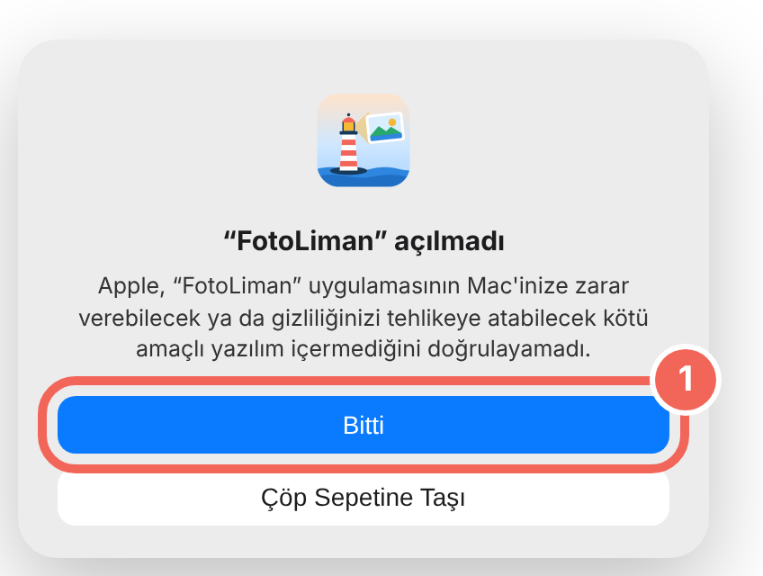
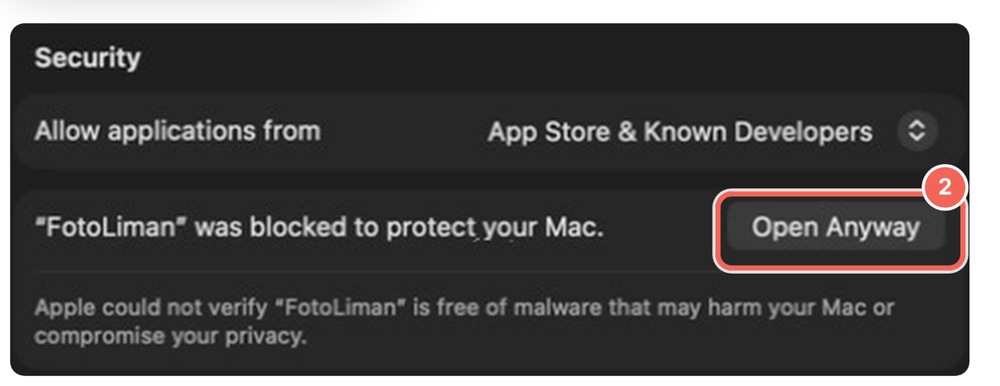
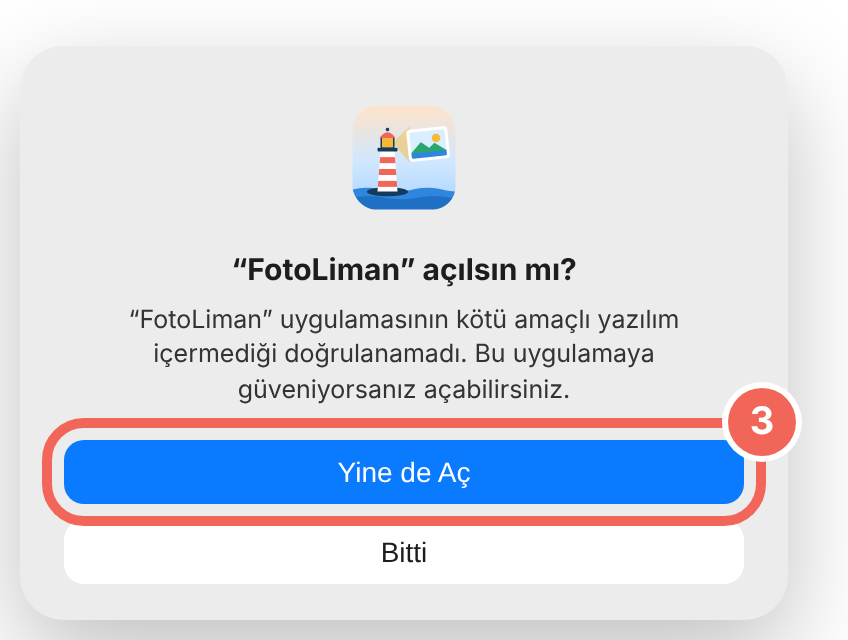
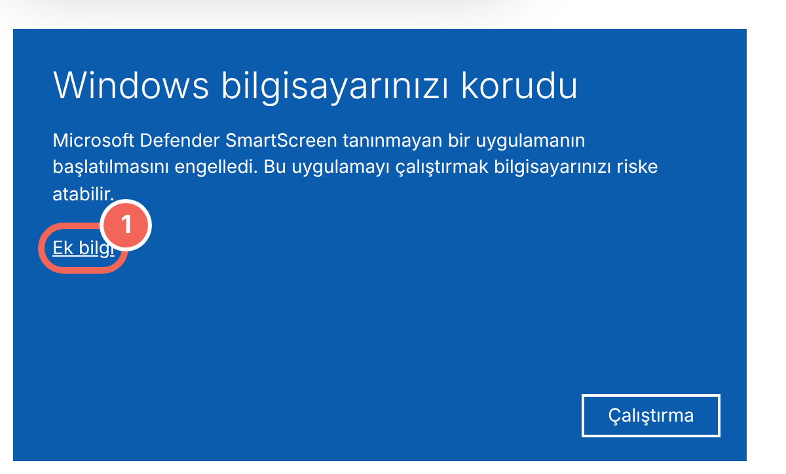
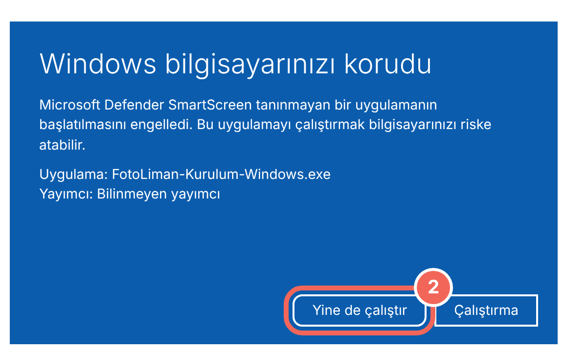
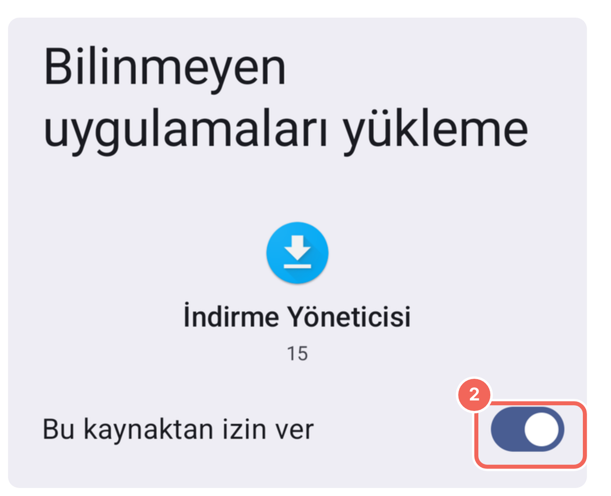
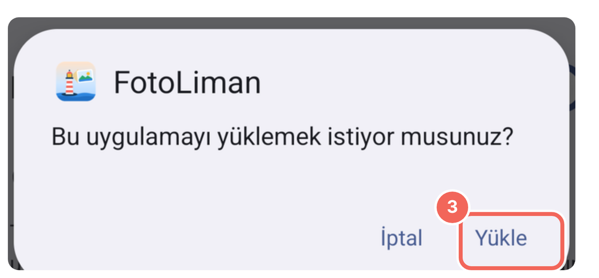

FotoLiman, Apple'ın ücretli geliştirici programında olmadığı için Mac ilk açılışta bir kez uyarı verir. Aşağıdaki adımlar bir dakika sürer, bir daha sorulmaz.
İndirdiğin dosyayı aç ve FotoLiman'ı Applications (Uygulamalar) klasörüne sürükle. Sonra FotoLiman'a çift tıkla.
“FotoLiman açılmadı” uyarısı çıkar. Bitti'ye bas. (İngilizce Mac'te: Done)

Sistem Ayarları › Gizlilik ve Güvenlik'i aç, en alta in ve FotoLiman satırındaki Yine de Aç'a bas. (System Settings › Privacy & Security › Open Anyway)

Bir kez daha sorarsa yine Yine de Aç de ve Mac parolanı ya da Touch ID'ni gir.

Gereken: Apple çipli Mac (M1 ve sonrası) ve macOS 14 ya da üstü.
Windows'ta kurulum
FotoLiman ücretli bir dijital imza taşımadığı için Windows ilk çalıştırmada bir kez uyarı verir.
İndirdiğin dosyaya çift tıkla.(Tarayıcının indirilenler listesinden de açabilirsin.)
“Windows bilgisayarınızı korudu” mavi ekranı çıkarsa önce Ek bilgi'ye, sonra Yine de çalıştır'a bas.


Kur'a bas (eski sürüm varsa düğme Güncelle yazar). Bitince FotoLiman masaüstünde ve Başlat menüsünde olur.
Telefondan Wi‑Fi ile aktarım için FotoLiman Link'i ilk açtığında güvenlik duvarı sorarsa Özel ağlar'ı işaretleyip izin ver.
Android'de kurulum
FotoLiman Mobil Google Play'de değil; dosyadan kurulur. Telefon ilk seferde bir izin ister.
Bu kaynaktan izin ver düğmesini aç, sonra geri dön.

Yükle'ye dokun. “Play Protect” uyarısı çıkarsa Ayrıntılar › Yine de yükle.

Android 8 ve üstü. Yeni sürüm çıktığında aynı düğmeden indirip üzerine kurman yeterli; ayarların korunur.
iPhone
iPhone'a uygulama dosyadan kurulamıyor; Apple buna izin vermiyor. iPhone'undaki fotoğrafları yedeklemek için iPhone'u kabloyla Mac ya da Windows bilgisayara tak ve bilgisayardaki FotoLiman'da Kamera / SD kart bölümünden iPhone'u seç. Bilgisayar için indirme düğmesi yukarıda.
Google Fotoğraflar'a bağlanırken
FotoLiman kişisel bir uygulama olduğu için Google bir kez “doğrulanmadı” ekranı gösterir. FotoLiman sadece senin seçtiğin fotoğrafları okur, hiçbir şeyi silemez.
Gelişmiş'e, sonra fotoliman sayfasına git (güvenli değil)'e bas ve izin ver.